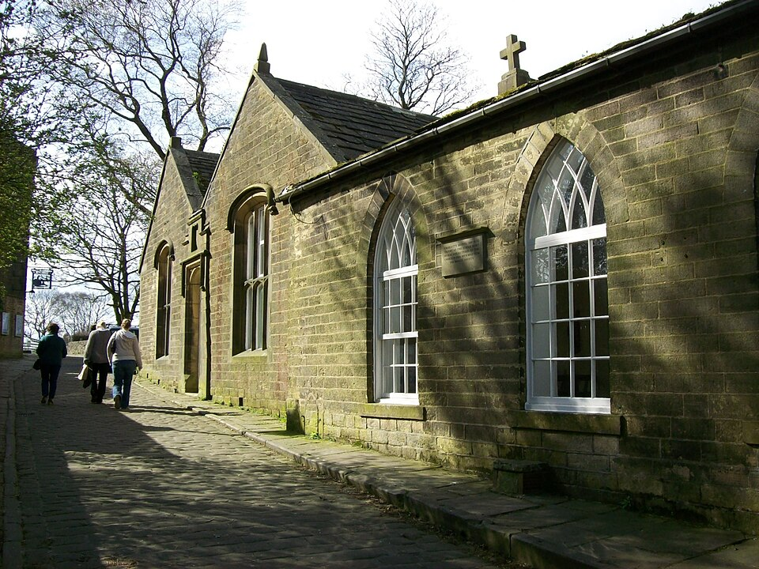
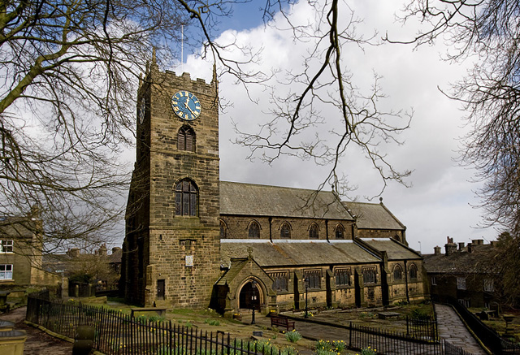
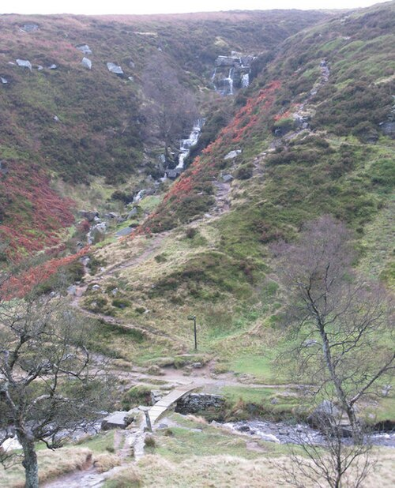
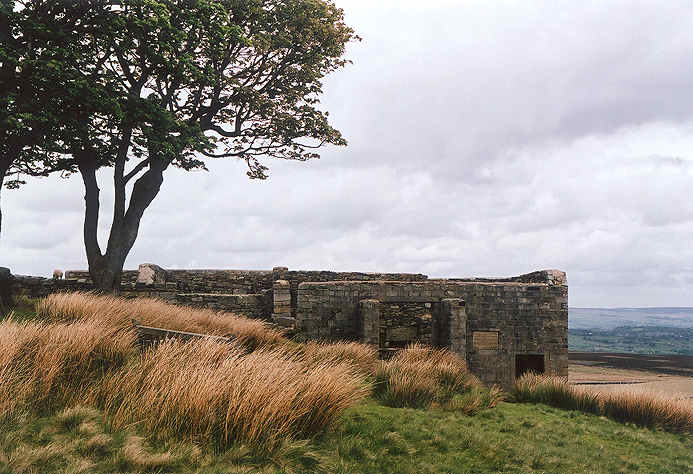
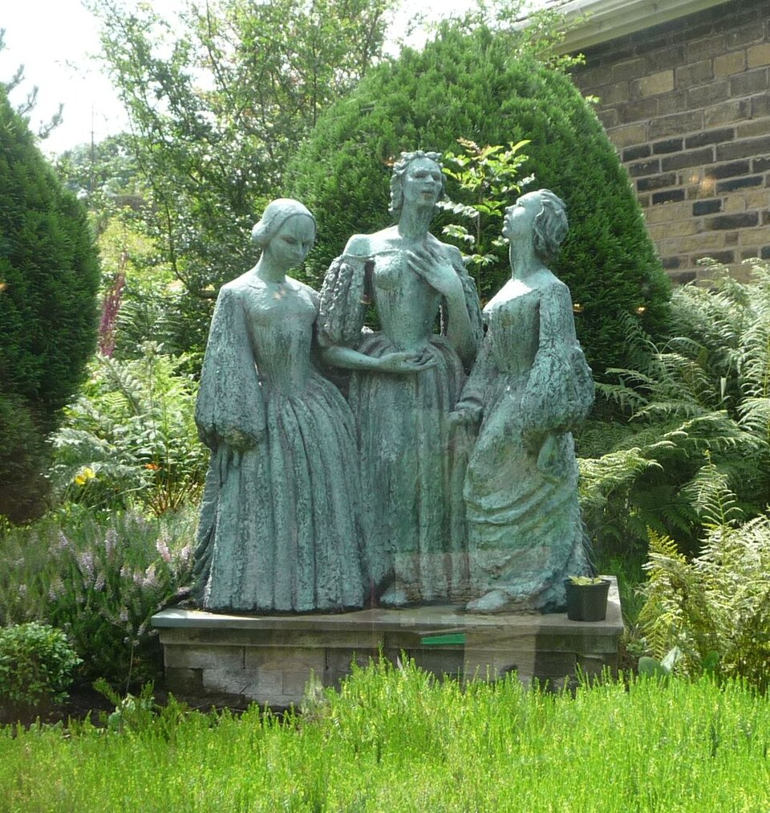

Located between St Michael & All Angels Church and the Brontë Parsonage Museum, the Old School Room has served the people of Haworth for almost 180 years. It was first built through a grant procured by Patrick Brontë in 1832. All three Brontë sisters educated the poor children of Haworth there, and it is the only place where they were all employed. Charlotte Brontë’s wedding reception was also held there, attended by 500 guests. Patrick Brontë later secured a further grant to enable the school to open on weekdays as well as function as a Sunday school, and Charlotte’s husband, Arthur Bell Nicholls, secured funding for an extension to the building in 1850. The school was replaced in 1903, but it remains a central part of Brontë lore and tourism in the area. Over the years it has functioned as a gymnasium, library, youth hostel, and can even be hired out for events today.
placeholder


Brontë Waterfall
The eldest Brontë sister achieved literary fame in her lifetime, and was the main voice in the preservation of her sisters legacies. She is known primarily for Jane Eyre.

Top Withens
The enigmatic middle sister known for her intense psychological landscapes, fierce originality, and her gothic masterpiece, Wuthering Heights.

Haworth Parsonage Museum
The youngest and most socially observant sister, her bold writing challenged such as The Tenant of Wildfell Hallchallenged Victorian norms regarding womens rights.